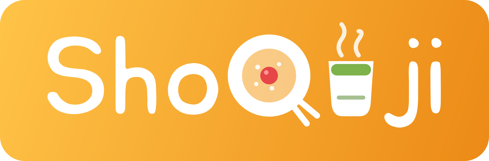

しょくじ
しょくじ

食べたら、ぱっと残そう
📝 記録する
食べたものを入れてね
🍚 ご飯何杯分？1杯（150g）≈ 240kcal
栄養も入れる
カロリーを入れてね（ボットの記録・MYメニューには要ります）
🍽 きょうのしょくじ
📱 LINE 版の記録は、ブラウザ版とは別です。
記録すると、くらぶボットにも入ります。
📱 この開き方だと、記録がくらぶボットに届きません。LINE 版で開きなおす ›
📝 記録用の文字もいっしょに送ります（「⚙️ 設定」で切りかえ）
📱 LINE 版で使う
- 💾 記録がくらぶボットのシートにも残ります。ブラウザ版だけの記録は、履歴を消したり機種を変えたりすると消えることがあります
- 📱 機種を変えても、ボットに入った記録が出ます（ここ60日分）
- 🤖 ボットのトークに食べたものを送っても記録できます。20時の「記録がない日」のお知らせも選べます
横にめくると、4コマで使い方がわかります（閉じても「🔗 くらぶボットとつなぐ」からまた見られます）。
パソコンで見ているときは、スマホで同じリンク（https://liff.line.me/2012187502-BVvVhWZM）を開いてね。
ふりかえり
よく記録するもの・MYメニュー
📌 固定した品は、いつも前に並びます。あいたところは記録の多い順です。ボットの返事の下に出るボタンに、この順で並び、押すだけで記録できます。
固定した品（0/12）
くらぶボットとつなぐ
LINE 版のしょくじは、くらぶボット（GAS）とつなげます。つなぐと、記録がボットのシートにも入り、ボットのトークで送った記録もここに出ます。ブラウザ版は、今までどおり何も送りません。
🔗 いまはくらぶボットとつながっています。記録すると、ボットのシートにも入ります。ボットのトークで送った記録は「ボット」の札で出ます（名前を押すと直せます）。
GAS のウェブアプリの URL（…/exec）を入れてね
自分のくらぶボットの GAS エディタで showWebhookUrl を実行して出る ② の URL（合言葉なし）です。空のときは、いつものくらぶボットにつながります。
自分のボットを持つとき：くらぶボットの作り方（自分の LINE の公式アカウントと、配布用シートのコピー。30分くらい）
設定
🎯 1日の目標（バーの目安）
📨 カードで送るとき
📅 週のはじまり
「ふりかえり」の週の区切り。ほかの Q のツールにもそろいます。
🔒 記録の控え
しょくじの記録は、この端末（ブラウザ）に残っています。機種変更やブラウザのデータを消す前に、控えを書き出しておくと安心です（LINE 版でボットとつないでいれば、ボットにも残ります）。